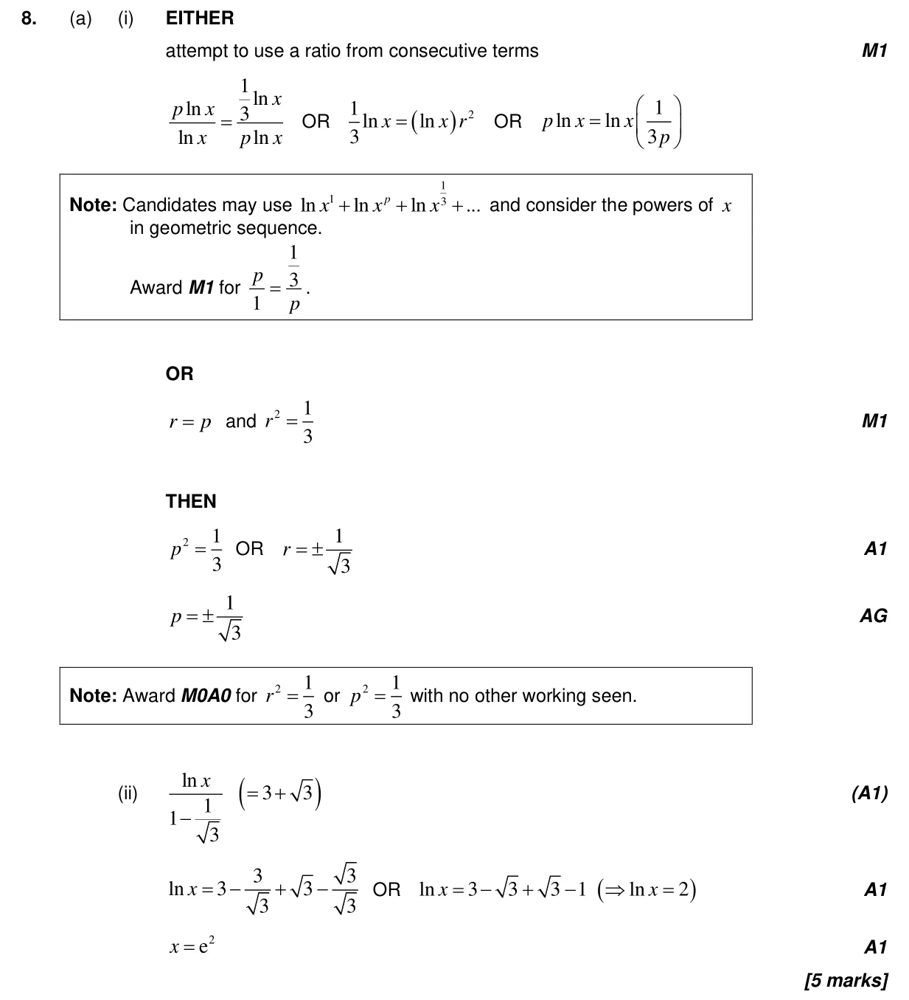
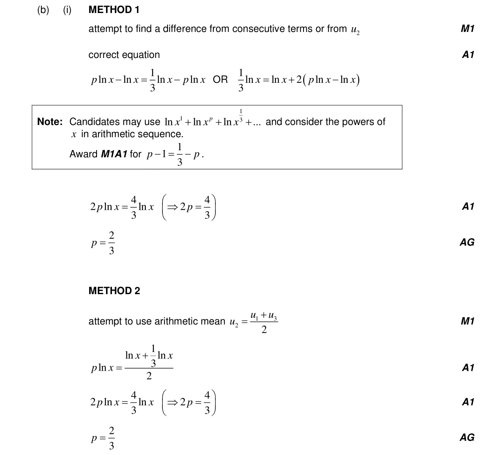
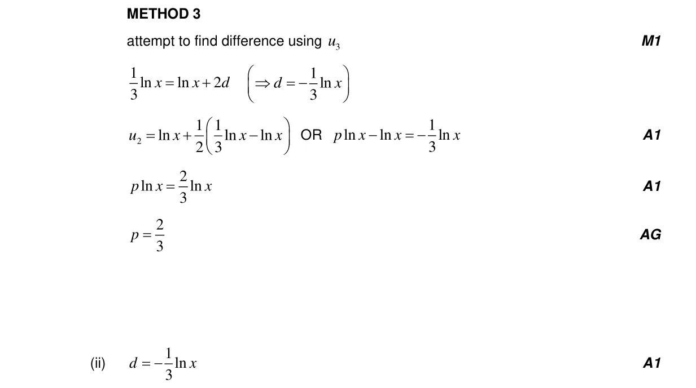
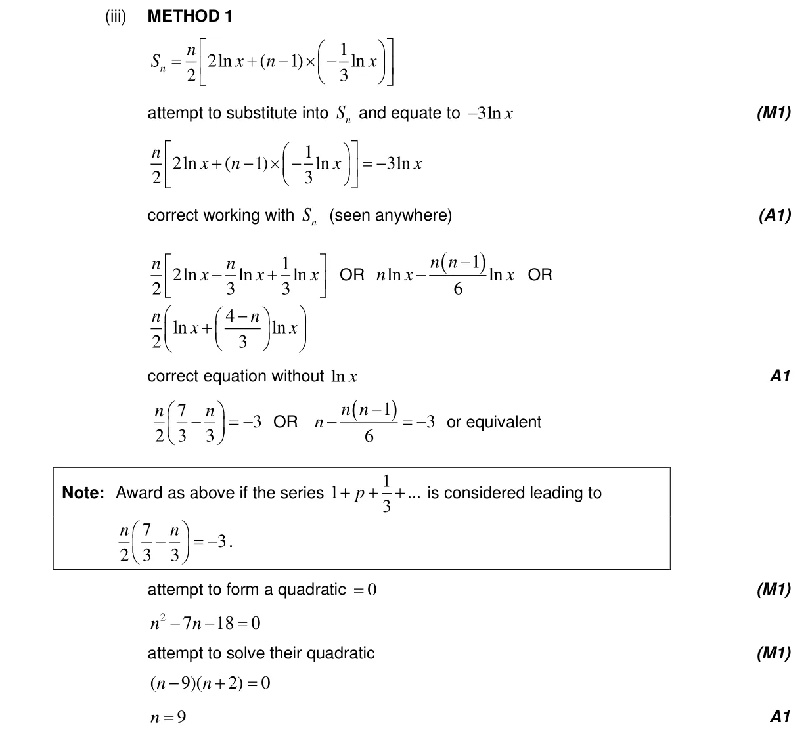
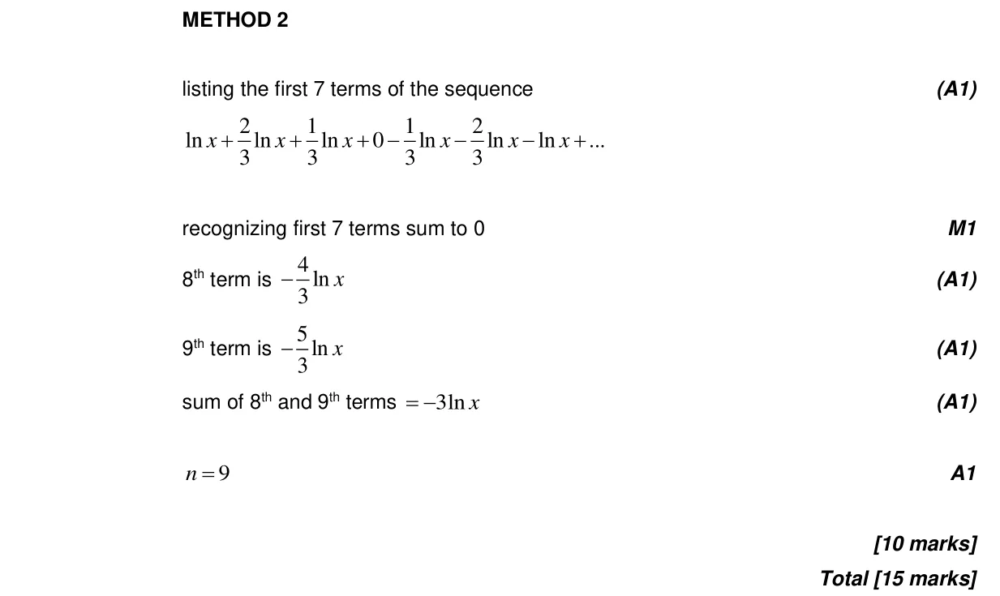

15 marks P1 TZ1 Section B No calculator 1.2 Arithmetic sequences and series2.7 Solutions of quadratic equations and inequalities, discriminant and nature of roots1.8 Sum of infinite geometric sequences1.3 Geometric sequences and series1.5 Laws of exponents with integer exponents and introduction to logarithms Question Hide breakdown ab Markscheme 